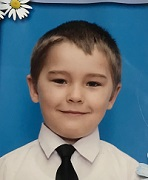

Идрисов Карим Ильшатович

Всем привет я только родился 6 января 2002 года в
с.Черниговка, Приморский Край. Все мое детство прошло
там же. Когда мне исполнилось 6 лет я пошел в детский сад.
Рос я скромным и добрым мальчиком.
После детского сада я учился в МБОУСОШ №1 в с.Черниговка.
Учился на 4 и 5, были проблемы с русским языком из-за учителя и в
целом из-за малого желания учиться. Но благодаря родителям я был
трудолюбивым и ответственным, что помогало мне спокойно хорошо учиться.
ОГЭ прошло довольно хорошо. В 11 классе я уже точно знал, что буду
поступать в ДВФУ на ПМИ, выбрал ПМИ из-за большого количества бюджетных
мест, а ДВФУ так как в городе живут родственники, что очень удобно, а
также потому, что Черниговка в двух часах езды от Владивостока. Время
ЕГЭ было очень волнительным, так как я не был уверен в своих силах.
Но экзамены прошли хорошо, и я получил удовлетворительный результат в
виде 86 баллов по русскому языку, и по 84 балла по математике и
информатике, что позволило мне без проблем поступить в ДВФУ.
Мои увлечения
Шахматы
Интеллектуальные игры, например Что?Где?Когда?
Настольный теннис
Просмотр спортивных игр